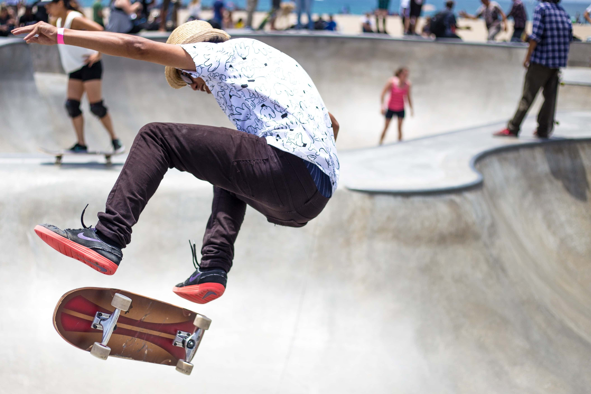
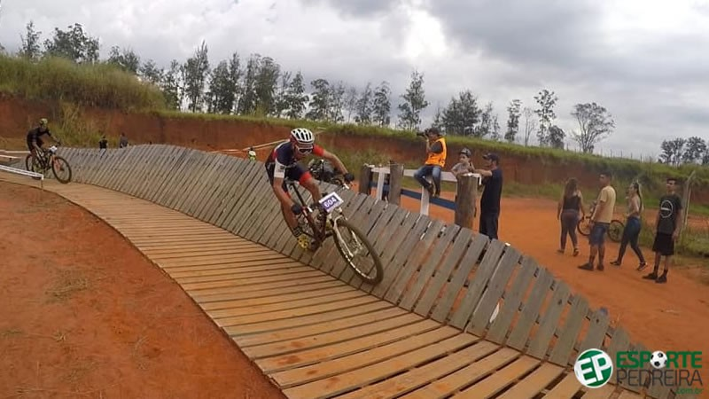
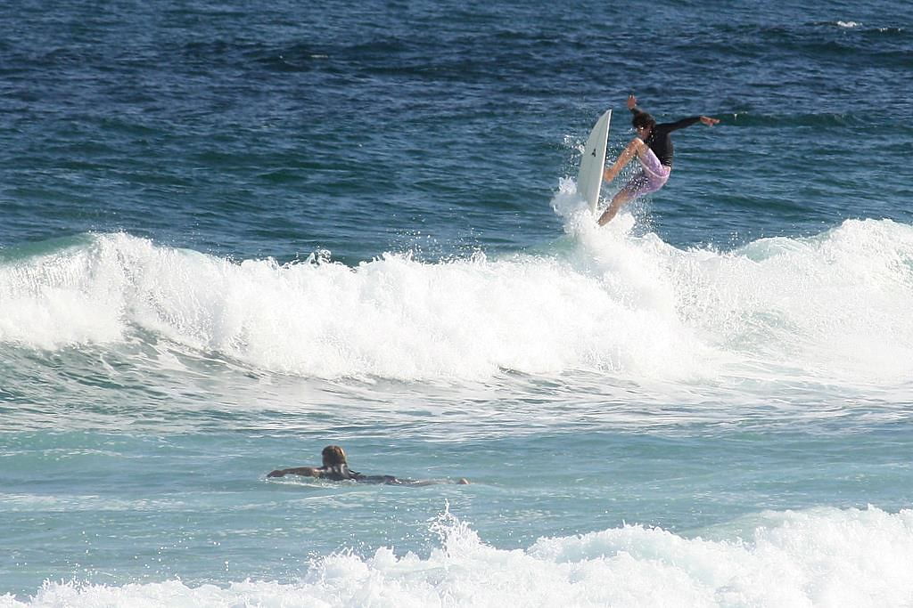

O skate é um esporte realizado em uma prancha, chamada shape, com quatro rodas pequenas e dois eixos chamados de “trucks”. As manobras executadas com baixo e alto grau de dificuldade consistem em deslizar sobre o solo e obstáculos. Devido seu aspecto criativo, o skate é considerado um esporte radical, sendo um dos mais conhecidos atualmente. Tem crescido nos últimos anos e atraído um grande número de patrocinadores. Os campeonatos são cada vez mais disputados.
Mountain Bike, ou Bicicleta de Montanha, é um tipo de bicicleta usado no Mountain Biking, uma modalidade de ciclismo na qual o objetivo é transpor percursos com diversas irregularidades e obstáculos. Em alguns países de língua latina o esporte é chamado de Bicicleta todo terreno ou BTT (Bicicleta Todo o Terreno). No Brasil é chamado popularmente de Mountain Bike, eventualmente de Ciclismo de Montanha ou Mountain Biking e comumente abreviado como MTB ou esporadicamente como BTT. O Mountain Bike é praticado em estradas de terra, trilhas de fazendas, trilhas em montanhas e dentro de parques e até na Cidade.
O surfe (do inglês surf) é um esporte de aventura na natureza, realizado na superfície marítima e caracterizado pelo deslize nas ondas por meio de uma prancha. A narrativa histórica mais difundida acerca da modalidade atribui seu surgimento a pescadores da Polinésia (conjunto de ilhas do Oceano Pacífico). Assim, a prática teria surgido do uso de tábuas de madeira por pescadores nativos para retornarem das embarcações até a margem.
